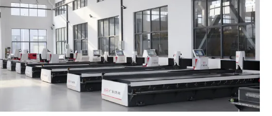

Architectural Metalwork
Decorative stainless panels, elevator interiors, doors, ceilings, and facade components.
Match press brakes, grooving machines, shears, panel benders, and laser cutters to the products your factory needs to make.
Decorative stainless panels, elevator interiors, doors, ceilings, and facade components.
Consistent bending and panel forming for switchgear, control cabinets, and enclosures.
Cutting and bending equipment for ducts, brackets, housings, and ventilation components.
Press brakes, shears, and laser cutting machines for custom equipment parts.
Clean sheet-metal forming for commercial kitchen equipment, appliance panels, and stainless fixtures.
Tandem press brakes for poles, long panels, vehicle parts, and oversized formed components.

Buyers building a new production line can combine fiber laser cutting, hydraulic shearing, V-grooving, CNC bending, and automated panel bending according to budget and production volume.
WOTIAN can quote standard models or customized configurations for overseas distributors, manufacturers, and project buyers.
Yes. The catalog states special model customization is available. Buyers can request tonnage, bending length, control system, tooling, voltage, color, and packaging options.
Send material type, thickness, sheet length, target products, daily output, required accuracy, destination country, and any preferred controller or tooling brand.
Yes. The site highlights export packaging, machine protection, documentation support, and shipment coordination for overseas buyers.
Choose CNC press brakes for higher accuracy and repeatability, NC press brakes for economical general bending, electric servo models for clean compact precision work, and tandem machines for extra-long parts.
Yes. Voltage, controller language, safety configuration, tooling, and machine color can be discussed before production.
Yes. OEM support is available for distributors and project buyers who need customized appearance, nameplates, or market-specific configuration.
Send the material, thickness, working length, product drawing or photo, destination country, and target quantity. WOTIAN can recommend a suitable model and quotation scope.
WOTIAN can support overseas buyers with operation guidance, machine documentation, remote communication, and preparation details before shipment.